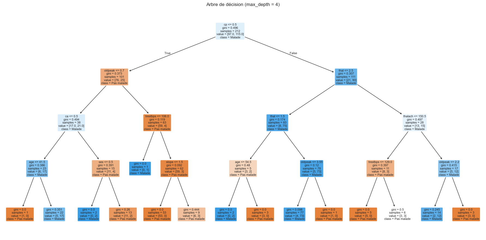
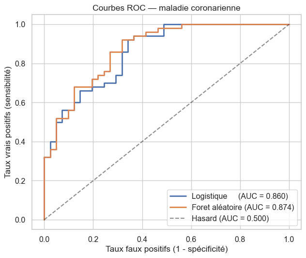
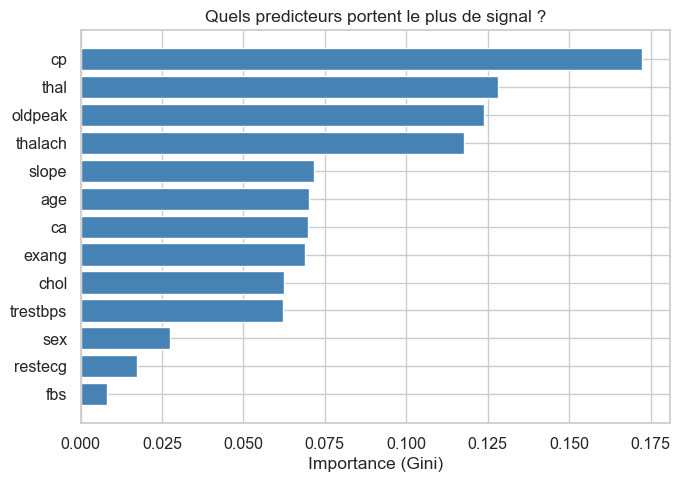
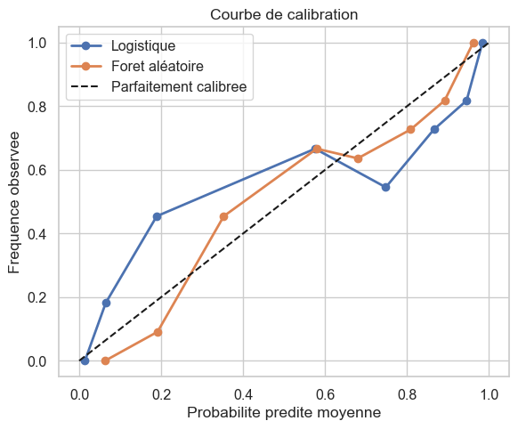
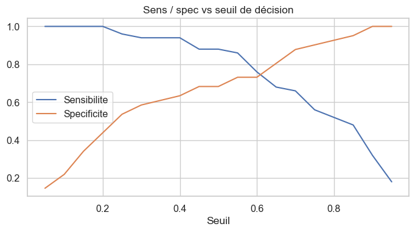

import numpy as np
import pandas as pd
import matplotlib.pyplot as plt
import seaborn as sns
# Splits et évaluation
from sklearn.model_selection import train_test_split, cross_val_score
# Pretraitement
from sklearn.preprocessing import StandardScaler
from sklearn.impute import SimpleImputer
from sklearn.pipeline import Pipeline
# Modeles
from sklearn.linear_model import LogisticRegression
from sklearn.tree import DecisionTreeClassifier, plot_tree
from sklearn.ensemble import RandomForestClassifier
# Metriques
from sklearn.metrics import (classification_report, confusion_matrix,
roc_curve, roc_auc_score, brier_score_loss)
from sklearn.calibration import calibration_curve
np.random.seed(42)
sns.set_theme(style="whitegrid", font_scale=1.05)
Analyse de Données avec Python pour Professionnels de la Santé
Module 6·ML clinique
Version condensee 6 heures · Module 6 sur 6 · Duree 60 minutes
Niveau avanceDuree 60 minPrerequis : Modules 1, 2, 5Colab compatible
OBJECTIFS DU MODULE
- Decider quand le ML est le bon outil — et quand une régression ou une règle clinique simple le surpasse.
- Diviser les données en train / test stratifié et utiliser une validation croisee k-folds.
- Ajuster une forêt aléatoire et extraire l’importance des predicteurs ; comparer a une régression logistique baseline.
- Evaluer un classifieur binaire avec ROC + AUC, courbe de calibration, et un audit d’équité par sexe.
QUAND NE PAS UTILISER LE ML
Petits jeux (n < 200). Arbres et forêts surajustent ; la régression logistique est plus fiable.
Validation réglementaire. Les autorités de santé exigent des modèles interpretables.
Une règle simple marche déjà. Si “glycémie > 126 mg/dL” identifie la majorite des diabetiques, pas besoin de forêt aléatoire.
Validation réglementaire. Les autorités de santé exigent des modèles interpretables.
Une règle simple marche déjà. Si “glycémie > 126 mg/dL” identifie la majorite des diabetiques, pas besoin de forêt aléatoire.
JEU DE DONNÉES
UCI Heart Disease (Cleveland) — 303 patients, 14 variables, outcome binaire
Source : sharmaroshan/Heart-UCI-Dataset — d’après UCI ML Repository.
target (1 = maladie coronarienne).Source : sharmaroshan/Heart-UCI-Dataset — d’après UCI ML Repository.
0. Imports
Le module sklearn est gigantesque ; on importe seulement ce dont on a besoin :
Syntaxe — imports sklearn (selectifs)
from sklearn.model_selection import train_test_split, cross_val_score from sklearn.linear_model import LogisticRegression from sklearn.ensemble import RandomForestClassifier from sklearn.metrics import roc_curve, roc_auc_scoreLa structure est
sklearn.<catégorie>.<classe_ou_fonction>.
1. Chargement
Colonnes principales :
| Variable | Sens |
|---|---|
age |
Age (annees) |
sex |
1 = homme, 0 = femme |
cp |
Type de douleur thoracique (0-3) |
trestbps |
Tension de repos (mmHg) |
chol |
Cholesterol total (mg/dL) |
fbs |
Glycemie a jeun > 120 mg/dL |
thalach |
FC max a l’effort |
exang |
Angine induite par l’effort |
oldpeak |
Depression ST a l’effort |
ca |
Nombre de gros vaisseaux a la fluoroscopie |
target |
1 = maladie, 0 = pas de maladie |
import os
from pathlib import Path
import pandas as pd
# Chemins de cache candidats, dans l'ordre :
# 1. ./data/ (jupyter local, notebook a la racine)
# 2. ../data/ (jupyter local, notebook dans un sous-dossier)
# 3. ./ (au pire on cree un cache dans le cwd)
# En Colab, aucun n'existe : on tombe sur l'URL et on cree ./data/ pour les
# cellules suivantes.
_CANDIDATES = [Path("data"), Path("../data")]
DATA_DIR = next((p for p in _CANDIDATES if p.is_dir()), Path("data"))
DATA_DIR.mkdir(exist_ok=True)
def load_csv(name: str, url: str, **read_csv_kwargs) -> pd.DataFrame:
"""Charge un CSV : cache local d'abord, sinon URL publique.
Le cache utilise le meme separateur que la lecture (TSV reste TSV).
"""
for candidate_dir in _CANDIDATES:
local = candidate_dir / name
if local.exists():
return pd.read_csv(local, **read_csv_kwargs)
df = pd.read_csv(url, **read_csv_kwargs)
try:
sep = read_csv_kwargs.get("sep", ",")
(DATA_DIR / name).parent.mkdir(parents=True, exist_ok=True)
df.to_csv(DATA_DIR / name, index=False, sep=sep)
except OSError:
pass
return df
HEART_URL = (
"https://raw.githubusercontent.com/sharmaroshan/"
"Heart-UCI-Dataset/master/heart.csv"
)
heart = load_csv("heart_uci.csv", HEART_URL)
print(f"Dimensions : {heart.shape}")
# .mean() sur une colonne binaire = proportion de 1
print(f"Prevalence : {heart['target'].mean():.1%}")
heart.head()Dimensions : (303, 14)
Prevalence : 54.5%| age | sex | cp | trestbps | chol | fbs | restecg | thalach | exang | oldpeak | slope | ca | thal | target | |
|---|---|---|---|---|---|---|---|---|---|---|---|---|---|---|
| 0 | 63 | 1 | 3 | 145 | 233 | 1 | 0 | 150 | 0 | 2.3 | 0 | 0 | 1 | 1 |
| 1 | 37 | 1 | 2 | 130 | 250 | 0 | 1 | 187 | 0 | 3.5 | 0 | 0 | 2 | 1 |
| 2 | 41 | 0 | 1 | 130 | 204 | 0 | 0 | 172 | 0 | 1.4 | 2 | 0 | 2 | 1 |
| 3 | 56 | 1 | 1 | 120 | 236 | 0 | 1 | 178 | 0 | 0.8 | 2 | 0 | 2 | 1 |
| 4 | 57 | 0 | 0 | 120 | 354 | 0 | 1 | 163 | 1 | 0.6 | 2 | 0 | 2 | 1 |
2. Train/test stratifié
Toujours stratifier sur l’outcome : sinon, le jeu de test peut avoir une prévalence très différente et l’AUC devient instable.
Syntaxe — train_test_split avec stratify
X_tr, X_te, y_tr, y_te = train_test_split( X, y, test_size=0.3, # 30% en test random_state=42, # reproductibilité stratify=y, # conserve la prévalence dans les 2 splits )
# La liste des predicteurs (toutes les colonnes sauf 'target')
features = ["age", "sex", "cp", "trestbps", "chol", "fbs",
"restecg", "thalach", "exang", "oldpeak",
"slope", "ca", "thal"]
X = heart[features]
y = heart["target"]
X_tr, X_te, y_tr, y_te = train_test_split(
X, y, test_size=0.3, random_state=42, stratify=y
)
print(f"Train : {len(X_tr)} patients (prévalence {y_tr.mean():.1%})")
print(f"Test : {len(X_te)} patients (prévalence {y_te.mean():.1%})")Train : 212 patients (prévalence 54.2%)
Test : 91 patients (prévalence 54.9%)3. Baseline — régression logistique en validation croisee 5-folds
La validation croisee est la bonne manière d’estimer la généralisation a partir d’un petit jeu de données :
- On découpe les données en
kplis égaux (souvent 5 ou 10). - On entraine sur
k - 1plis et on teste sur le 1 restant. - On repete pour chacun des
kplis. - On moyenne les
kscores.
Syntaxe — cross_val_score
from sklearn.model_selection import cross_val_score scores = cross_val_score(modele, X, y, cv=5, scoring="accuracy") # cv=5 : 5-fold CV # scoring : 'accuracy', 'roc_auc', 'f1', 'precision', ...
# Modele baseline
# max_iter=1000 pour éviter un warning de non-convergence sur petits jeux
lr = LogisticRegression(max_iter=1000, random_state=42)
# 5-fold CV sur tout X (les splits internes sont indépendants du train_test_split externe)
cv = cross_val_score(lr, X, y, cv=5, scoring="accuracy")
# .mean() et .std() resument la performance + variabilite
print(f"Accuracy CV : {cv.mean():.3f} +/- {cv.std():.3f}")
# .round(3).tolist() : 3 décimales puis conversion en liste Python pour l'affichage
print(f"Par pli : {cv.round(3).tolist()}")Accuracy CV : 0.828 +/- 0.046
Par pli : [0.803, 0.869, 0.852, 0.867, 0.75]4. Arbre de décision — classifieur interpretable
Un arbre est une suite de questions oui/non aboutissant a une feuille avec une classe predite. Un clinicien peut le lire et expliquer la prediction au lit du patient.
Toujours fixer max_depth. Sans limite, l’arbre pousse jusqu’a classer parfaitement chaque ligne du train — surapprentissage absolu.
Syntaxe — DecisionTreeClassifier
from sklearn.tree import DecisionTreeClassifier, plot_tree dt = DecisionTreeClassifier(max_depth=4, random_state=42) dt.fit(X_tr, y_tr) dt.predict(X_te) # predictions binaires dt.score(X_te, y_te) # accuracy sur le test plot_tree(dt, feature_names=..., class_names=..., filled=True)
# Arbre de profondeur max 4
dt = DecisionTreeClassifier(max_depth=4, random_state=42)
# .fit(X, y) : entrainement (mêmes signatures pour tous les classifieurs sklearn)
dt.fit(X_tr, y_tr)
# .predict() : décisions binaires sur le test
y_hat = dt.predict(X_te)
# classification_report : precision, recall, f1, support, par classe
print(classification_report(
y_te, y_hat,
target_names=["Pas malade", "Malade"],
)) precision recall f1-score support
Pas malade 0.77 0.73 0.75 41
Malade 0.79 0.82 0.80 50
accuracy 0.78 91
macro avg 0.78 0.78 0.78 91
weighted avg 0.78 0.78 0.78 91
# Visualisation de l'arbre
fig, ax = plt.subplots(figsize=(18, 9))
plot_tree(
dt,
feature_names=features, # noms des variables
class_names=["Pas malade", "Malade"], # noms des classes
filled=True, # couleurs par classe majoritaire
rounded=True, # coins arrondis (cosmetique)
fontsize=8,
ax=ax,
)
plt.title("Arbre de décision (max_depth = 4)")
plt.tight_layout(); plt.show()
5. Foret aléatoire
Une forêt aléatoire combine des centaines d’arbres entraines sur des échantillons bootstrap avec des sous-ensembles aléatoires de features et moyenne leurs predictions.
La randomisation decorrele les arbres et réduit la variance.
Compromis : meilleures predictions, plus d’arbre unique pointable a un clinicien.
Syntaxe — RandomForestClassifier
from sklearn.ensemble import RandomForestClassifier rf = RandomForestClassifier( n_estimators=200, # nombre d'arbres max_depth=6, # profondeur max par arbre random_state=42, n_jobs=-1, # utilise tous les cores CPU ) rf.fit(X_tr, y_tr) rf.feature_importances_ # importance par variable
# 200 arbres, profondeur 6, parallelise (n_jobs=-1)
rf = RandomForestClassifier(n_estimators=200, max_depth=6,
random_state=42, n_jobs=-1)
rf.fit(X_tr, y_tr)
print(classification_report(
y_te, rf.predict(X_te),
target_names=["Pas malade", "Malade"],
)) precision recall f1-score support
Pas malade 0.82 0.68 0.75 41
Malade 0.77 0.88 0.82 50
accuracy 0.79 91
macro avg 0.80 0.78 0.78 91
weighted avg 0.80 0.79 0.79 91
# Comparaison côte a côte en validation croisee
# Dictionnaire : nom -> objet modèle
modeles = {
"Logistique": LogisticRegression(max_iter=1000, random_state=42),
"Arbre (depth=4)": DecisionTreeClassifier(max_depth=4, random_state=42),
"Foret aléatoire": RandomForestClassifier(n_estimators=200, max_depth=6,
random_state=42, n_jobs=-1),
}
print("Accuracy CV 5-folds :")
# .items() pour iterer sur les paires (cle, valeur)
for nom, m in modeles.items():
s = cross_val_score(m, X, y, cv=5, scoring="accuracy")
# :22s aligne le nom sur 22 caractères
print(f" {nom:22s} : {s.mean():.3f} +/- {s.std():.3f}")Accuracy CV 5-folds :
Logistique : 0.828 +/- 0.046
Arbre (depth=4) : 0.765 +/- 0.064
Foret aléatoire : 0.831 +/- 0.0456. Courbe ROC et AUC
La ROC trace la sensibilité contre 1 - spécificité quand on fait varier le seuil de décision de 0 a 1.
L’AUC (area under curve) résume tout en un nombre :
- 0,5 — pas mieux qu’un tirage a pile ou face
- 0,7 - 0,8 — acceptable
- 0,8 - 0,9 — excellent
0,9 — exceptionnel (rare en clinique réelle)
L’AUC seule ne suffit pas. Un modèle peut avoir une excellente AUC et être inutile si ses probabilités sont mal calibrees.
Syntaxe — ROC et AUC
from sklearn.metrics import roc_curve, roc_auc_score probs = modele.predict_proba(X_te)[:, 1] # proba positives fpr, tpr, seuils = roc_curve(y_te, probs) # FPR, TPR, seuils correspondants auc = roc_auc_score(y_te, probs) # AUC en un nombre
# Reentrainement des modèles sur le train
lr.fit(X_tr, y_tr)
# .predict_proba() renvoie une matrice (n, 2) : [proba_0, proba_1]
# [:, 1] : on garde seulement la 2e colonne (proba positive)
p_lr = lr.predict_proba(X_te)[:, 1]
p_rf = rf.predict_proba(X_te)[:, 1]
# roc_curve renvoie 3 tableaux : fpr, tpr, seuils (le 3e on l'ignore avec _)
fpr_lr, tpr_lr, _ = roc_curve(y_te, p_lr)
fpr_rf, tpr_rf, _ = roc_curve(y_te, p_rf)
auc_lr = roc_auc_score(y_te, p_lr)
auc_rf = roc_auc_score(y_te, p_rf)
fig, ax = plt.subplots(figsize=(6.5, 5.5))
ax.plot(fpr_lr, tpr_lr, lw=2, label=f"Logistique (AUC = {auc_lr:.3f})")
ax.plot(fpr_rf, tpr_rf, lw=2, label=f"Foret aléatoire (AUC = {auc_rf:.3f})")
# Diagonale = un modèle 'au hasard'
ax.plot([0, 1], [0, 1], "k--", alpha=0.5, label="Hasard (AUC = 0.500)")
ax.set_xlabel("Taux faux positifs (1 - spécificité)")
ax.set_ylabel("Taux vrais positifs (sensibilité)")
ax.set_title("Courbes ROC — maladie coronarienne")
ax.legend(loc="lower right")
plt.tight_layout(); plt.show()
7. Importance des predicteurs
La forêt aléatoire expose une mesure d’importance Gini par feature. A utiliser pour générer des hypothèses — c’est une mesure brute (elle melange les features correlees) mais utile pour vérifier que le modèle utilise des predicteurs cliniquement plausibles.
Syntaxe — feature_importances_
rf.feature_importances_ # tableau, même longueur que featuresLe
_final indique un attribut calcule pendant.fit()(convention sklearn).
# Construction d'un DataFrame nom_feature / importance
imp = pd.DataFrame({
"Feature": features,
"Importance": rf.feature_importances_,
})
# Tri croissant pour que .barh affiche le top en haut
imp = imp.sort_values("Importance", ascending=True)
fig, ax = plt.subplots(figsize=(7, 5))
ax.barh(imp["Feature"], imp["Importance"], color="steelblue")
ax.set_xlabel("Importance (Gini)")
ax.set_title("Quels predicteurs portent le plus de signal ?")
plt.tight_layout(); plt.show()
# Top 5 : on prend les 5 dernieres lignes (tri ascendant) puis on inverse
print("Top 5 features :")
# .iloc[::-1] : inverse l'ordre des lignes (du plus grand au plus petit)
for _, row in imp.tail(5).iloc[::-1].iterrows():
print(f" {row['Feature']:>10s} : {row['Importance']:.3f}")
Top 5 features :
cp : 0.172
thal : 0.128
oldpeak : 0.124
thalach : 0.118
slope : 0.0728. Calibration — les probabilités sont-elles dignes de confiance ?
Une bonne AUC n’implique pas de bonnes probabilités. Un modèle bien calibre produit des probabilités qui correspondent aux fréquences observees : si vous predisez 30 % de risque, ~30 % des patients developpent effectivement la maladie.
On évalué avec :
- une courbe de calibration (probabilité moyenne predite vs proportion observee) ;
- le score de Brier (plus bas = mieux ; 0 = parfait).
Syntaxe — calibration
from sklearn.calibration import calibration_curve from sklearn.metrics import brier_score_loss obs, mean_pred = calibration_curve(y_te, probs, n_bins=8, strategy="quantile") brier = brier_score_loss(y_te, probs)
# n_bins=8 : on segmente l'échelle des probas en 8 paniers
# strategy='quantile' : chaque panier contient ~ le même nombre de patients
obs_lr, mean_lr = calibration_curve(y_te, p_lr, n_bins=8, strategy="quantile")
obs_rf, mean_rf = calibration_curve(y_te, p_rf, n_bins=8, strategy="quantile")
fig, ax = plt.subplots(figsize=(6, 5))
ax.plot(mean_lr, obs_lr, "o-", lw=2, label="Logistique")
ax.plot(mean_rf, obs_rf, "o-", lw=2, label="Foret aléatoire")
# Diagonale = calibration parfaite
ax.plot([0, 1], [0, 1], "k--", label="Parfaitement calibree")
ax.set_xlabel("Probabilite predite moyenne")
ax.set_ylabel("Frequence observee")
ax.set_title("Courbe de calibration")
ax.legend(); plt.tight_layout(); plt.show()
# Score de Brier : MSE entre probabilités predites et outcome réel
print(f"Score de Brier (Logistique) : {brier_score_loss(y_te, p_lr):.4f}")
print(f"Score de Brier (Foret aléatoire): {brier_score_loss(y_te, p_rf):.4f}")
Score de Brier (Logistique) : 0.1639
Score de Brier (Foret aléatoire): 0.14249. Audit d’équité par sexe
On vérifie que le modèle performe de manière comparable entre hommes et femmes — un contrôle minimal avant tout deploiement.
Un écart de plusieurs points d’AUC entre groupes est un signal d’alerte qui justifie un re-entrainement, une re-collecte de données, ou un seuil différent par groupe.
# On boucle sur les deux sexes (1 = homme, 0 = femme dans ce dataset)
rows = []
for sex_val, lbl in [(1, "Homme"), (0, "Femme")]:
# Masque booleen .values : np.array de True/False
m = (X_te["sex"] == sex_val).values
# Sous-groupe trop petit : on saute
if m.sum() < 10:
continue
# Sous-groupes de y, probas et predictions
sub_y = y_te[m]
sub_p = p_rf[m]
sub_h = rf.predict(X_te)[m]
# Matrice de confusion par mains (TN, FP, FN, TP)
tn = int(((sub_h == 0) & (sub_y == 0)).sum())
fp = int(((sub_h == 1) & (sub_y == 0)).sum())
fn = int(((sub_h == 0) & (sub_y == 1)).sum())
tp = int(((sub_h == 1) & (sub_y == 1)).sum())
rows.append({
"groupe": lbl,
"n": int(m.sum()),
"AUC": round(float(roc_auc_score(sub_y, sub_p)), 3),
"sens": round(tp / (tp + fn), 3) if (tp + fn) else None,
"spec": round(tn / (tn + fp), 3) if (tn + fp) else None,
})
pd.DataFrame(rows)| groupe | n | AUC | sens | spec | |
|---|---|---|---|---|---|
| 0 | Homme | 61 | 0.870 | 0.846 | 0.686 |
| 1 | Femme | 30 | 0.812 | 0.917 | 0.667 |
10. Exercices (avec corriges)
Exercice 1 — Comparer l’AUC entre logistique et forêt aléatoire en CV
# Votre essai ici# Solution
# scoring='roc_auc' : la métrique de CV devient l'AUC
auc_lr_cv = cross_val_score(LogisticRegression(max_iter=1000, random_state=42),
X, y, cv=5, scoring="roc_auc").mean()
auc_rf_cv = cross_val_score(
RandomForestClassifier(n_estimators=200, max_depth=6, random_state=42, n_jobs=-1),
X, y, cv=5, scoring="roc_auc",
).mean()
print(f"AUC Logistique : {auc_lr_cv:.3f}")
print(f"AUC Foret : {auc_rf_cv:.3f}")
# +.3f garde le signe (+ ou -)
print(f"Gain : {auc_rf_cv - auc_lr_cv:+.3f}")AUC Logistique : 0.901
AUC Foret : 0.904
Gain : +0.003Exercice 2 — Sensibilite et spécificité vs seuil
# Votre essai ici# Solution
# Probas predites par la forêt sur le test
p = rf.predict_proba(X_te)[:, 1]
# np.linspace(a, b, n) : n points uniformes entre a et b
seuils = np.linspace(0.05, 0.95, 19) # 0.05, 0.10, ..., 0.95
rows = []
for s in seuils:
yh = (p >= s).astype(int)
tn, fp, fn, tp = confusion_matrix(y_te, yh).ravel()
rows.append({
"seuil": s,
# 'if (tp + fn)' protege de la division par zero
"sens": tp / (tp + fn) if (tp + fn) else np.nan,
"spec": tn / (tn + fp) if (tn + fp) else np.nan,
})
thr = pd.DataFrame(rows)
fig, ax = plt.subplots(figsize=(7, 4))
ax.plot(thr["seuil"], thr["sens"], label="Sensibilite")
ax.plot(thr["seuil"], thr["spec"], label="Specificite")
ax.set_xlabel("Seuil"); ax.legend()
ax.set_title("Sens / spec vs seuil de décision")
plt.tight_layout(); plt.show()
Exercice 3 — Top 5 features uniquement — la performance baisse-t-elle ?
# Votre essai ici# Solution
# Series : feature -> importance
top5 = (pd.Series(rf.feature_importances_, index=features)
.sort_values(ascending=False)
.head(5)
.index.tolist())
print(f"Top 5 : {top5}")
# AUC en CV avec seulement les 5 features
auc_top5 = cross_val_score(
RandomForestClassifier(n_estimators=200, max_depth=6, random_state=42, n_jobs=-1),
heart[top5], y, cv=5, scoring="roc_auc",
).mean()
print(f"AUC top-5 : {auc_top5:.3f}")
print(f"AUC toutes (13) : {auc_rf_cv:.3f}")Top 5 : ['cp', 'thal', 'oldpeak', 'thalach', 'slope']
AUC top-5 : 0.859
AUC toutes (13) : 0.904Resume final
Vous etes arrive a la fin des 6 heures.
Vous savez maintenant :
- Manipuler des données en Python et pandas (Module 1).
- Nettoyer un jeu de données clinique et calculer prévalence, incidence, RR/OR (Module 2).
- Visualiser pour une audience de santé avec rigueur (Module 3).
- Tester une hypothèse et rapporter taille d’effet + IC (Module 4).
- Ajuster une régression linéaire ou logistique, lire des odds ratios (Module 5).
- Entrainer, évaluer honnetement et auditer un classifieur ML (Module 6).
Aller plus loin
- Analyse temporelle (décomposition, series épidémiques) : voir
../code/notebooks/ch09_geospatial_temporal.ipynb. - Analyse spatiale (geopandas, choropleth) : voir le même notebook.
- Projet capstone : voir
../code/notebooks/ch10_capstone.ipynb.
Ressources et liens utiles
Documentation officielle
- scikit-learn — https://scikit-learn.org/stable/ (la documentation est exceptionnellement claire ; commencez par le user guide).
- Random Forest doc — https://scikit-learn.org/stable/modules/ensemble.html#random-forests
- Model évaluation metrics — https://scikit-learn.org/stable/modules/model_evaluation.html
- Calibration — https://scikit-learn.org/stable/modules/calibration.html
Manuels gratuits
- An Introduction to Statistical Learning (James, Witten, Hastie, Tibshirani, edition Python 2023) — https://www.statlearning.com/
Le manuel de référence pour ML, niveau accessible, avec code Python. - The Elements of Statistical Learning (Hastie, Tibshirani, Friedman) — https://hastie.su.domains/ElemStatLearn/
Plus technique ; libre en PDF.
ML applique a la santé
- Christodoulou et al. (2019) A systematic review shows no performance benefit of machine learning over logistic régression for clinical prediction models. J Clin Epidemiol 110: 12-22 — étude qui modere les attentes en ML clinique.
- Wynants et al. (2020) Prediction models for diagnosis and prognosis of COVID-19: systematic review and critical appraisal. BMJ 369: m1328 — exemple de ce qui peut mal tourner.
- TRIPOD-AI / PROBAST-AI — checklists pour la publication et l’évaluation des modèles IA en santé : https://www.tripod-statement.org/
- FDA — Artificial Intelligence and Machine Learning Software as a Medical Device — https://www.fda.gov/medical-devices/software-medical-device-samd/artificial-intelligence-and-machine-learning-aiml-enabled-medical-devices
Equite et biais
- Obermeyer et al. (2019) Dissecting racial bias in an algorithm used to manage the health of populations. Science 366: 447-453 — étude de cas majeure sur le biais algorithmique en santé.
- fairlearn (https://fairlearn.org/) — bibliothèque Python pour auditer et corriger les biais.
- AI Fairness 360 (IBM, https://aif360.res.ibm.com/) — autre suite d’outils équité.
Pour aller plus loin
- XGBoost (https://xgboost.readthedocs.io/) — gradient boosting, souvent meilleur que la forêt sur tabulaire.
- SHAP (https://shap.readthedocs.io/) — pour expliquer les predictions individuelles, indispensable en contexte clinique.
- MLflow / Weights & Biases — pour tracer experimentations, versions de modeles, hyperparametres.